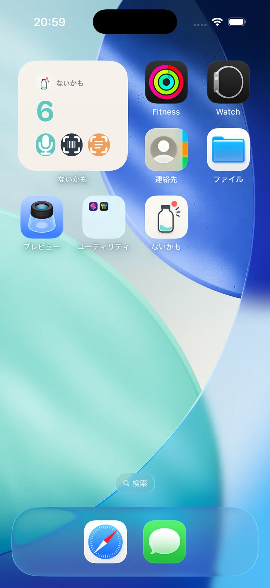
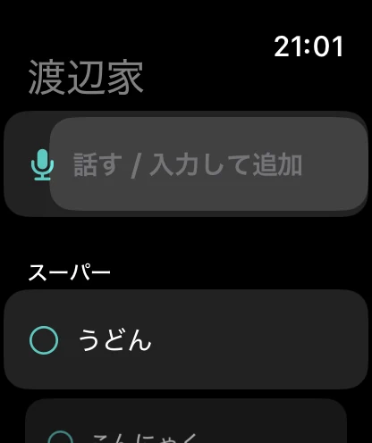
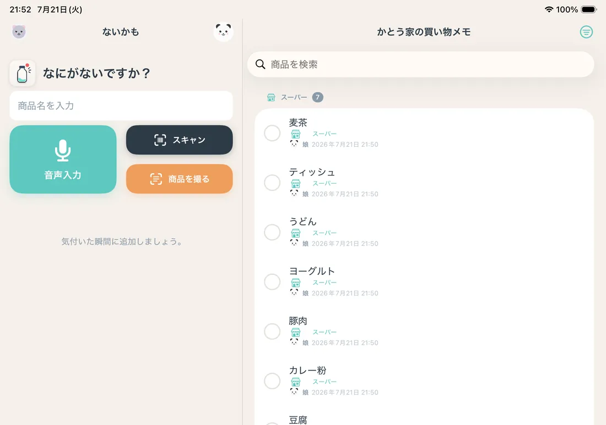
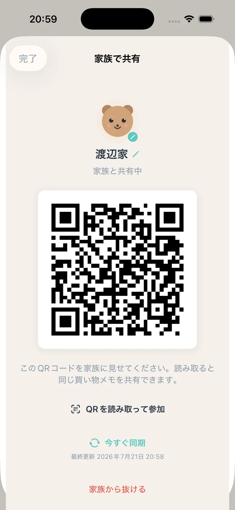
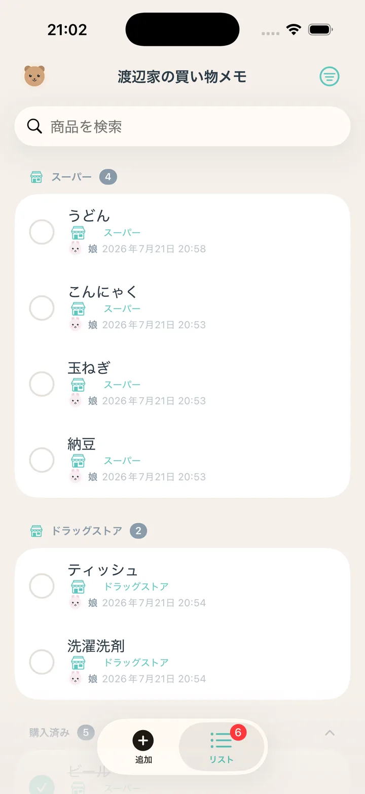
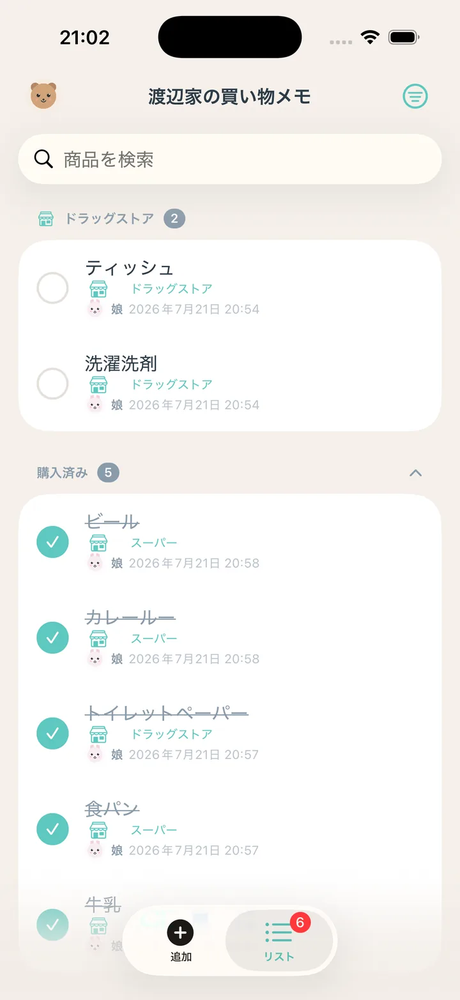

ホーム画面ウィジェット
残りの

iPhone・iPad・Apple Watchの
「牛乳、ないかも」——そう
コンセプト
問題は、
家の
冷蔵庫を
多くの
この
カテゴリも
なくなりそうな
アプリを
確認画面は
試してみる
右の
なにが
最近
追加の
ホーム画面、
残りの

手首に

話した
JANコードを
バーコードを
手が
iPhoneの
大きな

家族共有
アカウント登録も、
夫婦で、



買い物中
片手で
ほかの
アプリを
IDも
ウィジェット、
「牛乳と卵」は
通信できなくても
安心して
名前も
家族共有を
広告や
カメラや
詳しくはプライバシーポリシーを
使い方
アプリは
アプリを
カメラ・マイクの
同期は
共有を
FAQ
不要です。
はい。
はい。
いいえ。
商品名を
ネットワークに
各項目は
無料で、
不具合の